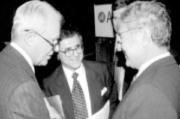

![1. The difference between Chris Ruddy and Mike Wallace is that Chris Ruddy is a hard-working reporter who wants to get at the facts, while Mike Wallace is a geriatric hatchet-man who apparently didn't recall that Ft. Marcy Park had been closed for weeks in an on-going investigation into the death of Vince Foster.
2. CBS implied the carpet fibers on Foster's clothes were the result of Foster's new carpet. Are we to also infer that the semen stains were the result of Foster's new girlfriend?
3. Meanwhile there is another conspiracy theory going around: Critics of the Clinton administration are inspired by Satan. Perhaps we'll have a national witch-hunt with Mike Wallace playing the role of Grand Inquisitor.
4. One of the functions served by the largely irrelevant debates regarding the evidential discrepancies at Ft. Marcy Park is to prevent the asking of questions with respect to the larger picture; namely, What was Vince Foster involved in that led to his death? Who killed him? and Why? No, it is much, much safer that we spend countless days focused on the burning issue of whether Vince Foster was left- or right-handed.
5. One of these omitted larger questions concerns the relationship of Vince Foster to Clinton's financial backer Jackson Stephens, and to the latter's role in money-laundering and drugs-for-arms deals. Jackson Stephens is the Little Rock billionaire who has held substantial interest in Worthen National Bank as well as in Stephens Inc., one of the largest privately owned investment banks outside Wall Street. Worthen gave the Clinton campaign a $3.5 million dollar line of credit.
6. Crucial parts of the Arkansas laundry were created when Stephens married his political connections in Panama and Washington to his Little Rock financial institutions and his Little Rock software firm Systematics.
7. It began when Stephens helped bring BCCI (the Bank of Credit and Commerce International) to America. The details of this story are important, because it represents the beginnings of a cozy relationship between Jackson Stephens, Hillary Rodham Clinton, Webster Hubbell, Bert Lance, Systematics, Vince Foster, and BCCI.
Stephens, a 1946 Naval Academy graduate, had joined with William Middendorf II (Secretary of the Navy under Nixon and Ford) in April 1977 to acquire Financial General, a Washington D.C.-based bank with headquarters a block from the White House.
'Some people might think it is important to know about the outstanding loans and balances of Government officials,' a Washington banking executive noted at the time.
Stephens then sent salesmen from Systematics to talk to Middendorf about providing banking software for Financial General. When these salesmen were firmly rejected, Stephens decided to wrest control of the bank from Middendorf. To do so he solicited the help of Bert Lance, Jimmy Carter's Director of the Office of Management and Budget. Lance knew the executives at Financial General, because they had sold him controlling interest in the National Bank of Georgia in 1975.
Stephens himself had met Lance through President Carter, his old roommate from Naval Academy days.
In November 1977, Stephens introduced Lance to BCCI founder Agha Hasan Abedi, and Abedi in turn introduced Lance to investor Gaith Pharaon. Pharaon, acting on behalf of Abedi, proceeded to acquire the stock of Bert Lance's National Bank of Georgia, a deal consummated on January 5, 1978, a day after Lance's $3.4 million loan from the First National Bank of Chicago was repaid by BCCI London.
Lance then joined with Jackson Stephens to help BCCI take over Financial General. A Financial General lawsuit filed on February 17 named 'Bert Lance, Bank of Credit & Commerce International, Agha Hasan Abedi, Eugene J. Metzger, Jackson Stephens, Stephens Inc., Systematics Inc. and John Does numbers 1 through 25.'
8. In that law-suit, Systematics was represented by C.J. Giroir, Webster Hubbell, and Hillary Rodham Clinton of the Rose Law Firm. Vince Foster would later tell the American Lawyer that Hillary Clinton did all the intellectual property work for Systematics.
Part of this 'intellectual property' would involve a banking- transaction software system based on the stolen PROMIS software. A telecommunications back-door to the PROMIS software was introduced by Michael Riconosciuto, now in prison, but then Director of Research for a Wackenhut Corp.-Cabazon Indian Reservation joint venture. In an affidavit, Riconosciuto says the copy of the PROMIS software he received was given to Wackenhut by Justice Dept. official Peter Videnieks. Earl Brian, acting through Wackenhut, then gave it to Riconosciuto.
Earl Brian, who later sold the same software to Iraq using the arms dealer Carlos Cardoen as an intermediary, will undoubtedly have some- thing to say about all this, as he has been indicted in California for fraudulent lease transactions undertaken while he was head of Financial News Network, United Press International, and Infotechnology.
9. In the same Financial General lawsuit, Bert Lance's attorney was Robert Altman, who later became President of the bank when it was finally taken over. Altman's mentor Clark Clifford (the former Defense Secretary under Lyndon Johnson) who also acted as BCCI's attorney became the bank's Chairman.
10. The Financial General takeover attempt did not succeed right away. In another lawsuit, one filed March 18, 1978, the Securities and Exchange Commission charged Bert Lance with violations of federal security laws, and BCCI's application to purchase Financial General Bankshares was denied.
Abedi then formed a new takeover vehicle called Credit and Commerce American Holdings (CCAH), based in the Netherlands Antilles. The largest investor in CCAH was Kamal Adham (the former head of Saudi Arabian intelligence), who put up $13 million of his own money On October 19, 1978, CCAH filed for approval with the Federal Reserve to purchase Financial General. This application was dismissed on February 16, 1979, due to opposition from Financial General's Maryland subsidiary, but a new application was submitted later.
The Federal Reserve finally approved the purchase in on April 19, 1982, and BCCI renamed the bank 'First American' three months later. The head of Bank Supervision at the Federal Reserve when BCCI's purchase was approved was Jack Ryan, who later became head of the Resolution Trust Corporation, in which role he would deny Rep. Leach's requests for documents related to Madison Guaranty, the Whitewater thrift.
11. BCCI was the center of a global laundry and a conduit for transactions involving arms, drugs, and nuclear technology.
Firstly, BCCI had the motive. BCCI founder Abedi was committed to the development of an Islamic atomic bomb, even donating 500 million rupees for the creation of Pakistan's Gulam Ishaq Research Institute for nuclear development. (BCCI paid the lawyer for Dr. Abdul Qader Khan, head of Pakistan's nuclear program, who a Dutch court convicted in 1983 of stealing the blueprints for a uranium enrichment factory. Three Pakistanis indicted in Houston in 1984 had tried to buy nuclear triggers using BCCI gold. A Pakistani-born Canadian, indicted in Philadelphia in 1987 for conspiracy to export restricted specialty steel and metal to enhance nuclear explosions, paid for the materials through BCCI Toronto. Etc.)
Secondly, BCCI had the right political connections. BCCI-founder Abedi got Jimmy Carter to publicize BCCI to heads of state around the world. Abedi made his personal 727 jet available to Carter, and accompanied the former President to Thailand, Tibet, Hong Kong, and the Soviet Union, among other places. Carter introduced Abedi to many heads of state, from Deng Xiaoping in China to James Callahan in the U.K. Abedi donated a half million dollars to establish the Carter presidential library, and a public policy institute at Emory university.
Thirdly, BCCI had the right intelligence connections. Kamal Adham, who became the lead frontman in BCCI's takeover of First American, had also been the CIA's principal liaison for the entire Middle East from the mid- 1960's through 1979. The CIA utilized BCCI for its own payments. For example, Manuel Noriega, who was recruited by the U.S. Defense Intelligence Agency in 1959, who went on the CIA payroll in 1967, and who became head of Panamanian military intelligence in 1968, was paid through the Panamanian branch of BCCI. The CIA also used BCCI branches in Pakistan to launder payments to the Afghan rebels, and Pakistani officials used the same bank to launder heroin profits.
Fourthly, BCCI had the right U.S. financial connections. Jackson Stephens would later capitalize on the $100,000 donation he made to the 1988 campaign of George Bush (thereby becoming a member of Bush's 'Team 100'), as well as his friendship with George Bush, Jr., to to get BCCI involved in funding a lucrative Harken Energy offshore project in Bahrain. The money apparently came through the Swiss BCCI subsidiary.
12. Stephens' principal motive in bringing BCCI to America was apparently to connect up his own financial institutions to the global laundry--not only First American, but those in Little Rock also. To avoid the type of SEC scrutiny involved in the Financial General takeover, Webster Hubbell, who had represented Stephens' software company Systematics, was employed to draw up the charter for the Arkansas Development Finance Authority (ADFA). The structure for the laundry was then in place.
One form of Stephens' laundry worked through front companies set up by bond broker Don Lasater. These companies would deposit cash in banks such as Stephens' Worthen Bank, which would not fill out reporting forms. In return for this service, the companies would be obligated to buy bonds issued by the ADFA, and underwritten by Stephens' investment bank Stephens Inc. Stephens would thus be compensated for the laundering service in the form of an investment banking fee.
The money from the bond issue, meanwhile, would go back to the same front companies. That is, in effect the companies bought their own bonds and paid Stephens a fee for the service.
The participation of the ADFA, a state government institution, eliminated SEC scrutiny. ADFA formally issued and 'guaranteed' the bonds, and thus collected a fee in the process. Some of these fees were translated into 'loans' to the political friends of the Governor of Arkansas, William Jefferson Clinton, now President of the United States.
At other times ADFA was itself the core of the laundry. At the end of December 1988, for example, the ADFA deposited $50 million in Fuji Bank in the Cayman Islands. Fuji Bank subsequently purchased the industrial development loan of POM, Inc., a parking meter and arms production company owned by Seth Ward, Webster Hubbell's father-in-law. Hubbell was also POM's corporate attorney.
13. Jackson Stephens had political connections in Panama, which was then becoming the banking center for the Colombian cocaine business. One of these connections was Gabriel Lewis, the Panamanian Ambassador to Washington who had negotiated the Panama Canal Treaty. Another was Manuel Noriega, the head of G-2 (Panamanian military intelligence) who made a deal with the Medellin cocaine cartel.
Stephens was the banker for Gabriel Lewis, who had gotten very rich after he created corrugated banana boxes. Gabriel Lewis' seaside home on Contadora Island, which Lewis then owned, was the site where Canal negotiator Ellsworth Bunker was told in August 1974 that Panama would re-establish diplomatic relations with Cuba. Later the exiled Shah of Iran stayed at Lewis' home from December 1979 to March 1980, while Manuel Noriega provided for the Shah's security. (In his book Crisis, Hamilton Jordan tells how he tried to use Gabriel Lewis to help establish contact with the Iranians in the Iran-hostage crisis.)
Contadora Island would later become a conduit for drug shipments. One of Noriega's pilots, Cesar Rodriquez, became manager of Contadora Island's airline, and would appear at his club atop the Bank of Boston building with suitcases full of $100 bills. Rodriquez told marijuana smuggler Steven Michael Kalish, who wanted to bring $100 million in cash to Panama (whose currency is the U.S. dollar), to use the services of the Panamanian branch of BCCI, which handled both Rodriquez's and Noriega's accounts.
In 1982 Noriega had helped negotiate a truce between the Castro- backed M-19 in Columbia and the beginnings of the Medellin cartel. In subsequent coke shipments through Panama, another Noriega pilot Floyd Carlton Caceres would receive $400 per kilo, while Noriega would receive $100,000 to $200,000 per flight. But Noriega kept raising the transshipment price charged to the cartel under Pablo Escobar.
The feud escalated until in May 1984, Noriega let Escobar's new cocaine processing plant at Darien be destroyed (which also won him points with the Americans). Noriega, hiding out in Paris, then sent his political strategist Jose Blandon to talk to Castro, who mediated a settlement between Medellin and Noriega.
Subsequently Noriega closed a Panamanian bank for money laundering, because it was owned by a member of the Cali cartel--a Medellin competitor. Noriega also helped out the Medellin cartel by arresting or informing on Cali drug dealers to the DEA (whom effectively served as Noriega's private enforcer). The DEA publicly praised Noriega for helping shut down the Roberto Suarez Bolivian operation--another Medellin competitor.
14. The drug-arms-money laundering connection between Panama and Arkansas was apparently first cemented in the 'Iran'-Contra dealings. Both Panama and Arkansas were used by Oliver North as transshipment points for money and arms to the Contras.
(The word 'Iran' is in quotes since it was Iraq, not Iran, that the U.S. was mostly dealing with. Even Ollie North said 'the coverup is itself a coverup', because the focus of the later Walsh investigation into the minor dealings with Iran obscured the major dealings with Iraq. The outbreak of the Iran-Iraq war in 1980 caused great intelligence concern after the Reagan administration took office, because Iraq appeared in danger of losing the war. It became U.S. policy to assist Iraq. Those who sold arms and also nuclear technology to Iraq found the business very lucrative, and would continue the process after U.S. official policy changed.)
By 1983, two years after the death of Omar Torrijos, Manuel Noriega had outmaneuvered three higher ranking Colonels to became head of the National Guard, which he renamed the Panamanian Defense Forces at the suggestion of Israeli Michael Harari. Hararai, formerly high in the Mossad, had been demoted for assassinating the wrong 'terrorist'. He showed up in Panama and grew close to Torrijos by mediating between him and his Jewish father-in-law. Harari assisted Noreiga's G-2 in developing sophisticated electronic surveillance techniques. After Noriega's older brother and closest advisor Luis Carlos died in early 1984, Noriega began to call Harari his 'mentor'.
Harari's participation ensured that Israel got a piece of Ollie North's action. By December 1983 the Israelis had begun using a Panamanian CIA front company, IFMA Management Company, to funnel support to the Contras. Harari would later boast of his friendship with Donald Gregg, George Bush's national security advisor.
In October 1984 the Boland amendment was extended to say no U.S. intelligence organization could spend money to support the Contras. Bill Casey and Oliver North decided the White House was exempt, and North through Richard Secord set up a secret Contra account in Credit Suisse, Geneva, called Lake Resources. Similarly, Noriega's Geneva lawyer and business associate, Juan Bautista Castillero, set up a Contra aid front company called Udall Research Company. (Noriega and his political advisor Jose Blandon advised North that the Nicaraguan 'Southern Front' are really 'cafe guerillas', more interested in doing business and sleeping with prostitutes than in fighting, but North ignored their advice.)
15. According to what Money Laundering Bulletin calls 'The Greatest Story Never Told', an 'archive of more than 2000 documents. . . allege that western Arkansas was a centre of international drug smuggling in the early 1980s--perhaps even the headquarters of the biggest drug trafficking operation of all time' (March 1995).
The degree of Bill Clinton's knowledge of, and participation in, this operation is not always clear. Certainly CIA secrecy is not in itself sufficient to defend a supposed lack of knowledge on Clinton's part. Clinton was recruited into the CIA by Cord Meyer while Clinton was a student in London. This itself gave him a somewhat symbiotic relationship with George Bush, both while Bush was CIA director and later while Bush was Vice President.
According to R. Emmett Tyrrell, Jr., (in the October 1995 American Spectator), Arkansas state trooper L.D. Brown, after taking a return flight with Barry Seal carrying cocaine and money from Central America to Mena, reported the details to Governor Clinton, who said, 'That's Lasater's deal, that's Lasater's deal, and your buddy [or 'hero'] Bush knows about it.'
One CIA source who was watching Clinton closely in the early 80's is ambiguous as to how much Bill Clinton knew about the details of the Mena operation, but is somewhat more certain as to Hillary's knowledge (although Hillary was not a CIA agent, she had reliable information through the Rose Law Firm, and her own informants among the State Police), and confirms that Vince Foster was helping launder money at the time. He denies, however, that Foster was then involved in espionage. 'That came later,' he says.
16. Another thing that came later was the BCCI-financed arming of Iraq. What began as a simple U.S. strategy to maintain a balance of power between Iran and Iraq, turned into a vast money-making enterprise involving the sale of U.S. nuclear technology and nuclear secrets to both Iraq and Israel. In particular, the participation of Jackson Stephens and Hillary Clinton in the Pittsburgh-based nuclear network, along with the entrepreneurial (and deadly) activities of the Wackenhut Corporation, would eventually result in the untimely death of Vince Foster.](morgellons-disease/berlusconi-p2-membership.gif)
The Cercle remains a bit of a mystery. It has been acknowledged from all sides that the meetings of this group are completely "off the record" and that members are not supposed to speak about these meetings at all. The Independent found that out in 1997 when members just hung up the phone without saying anything, and even as late as 2008 it was repeated that Cercle meetings are "off the record" [1] with Freedom of Information requests seemingly not making any difference:
"I asked the Home Office to disclose Home Office staff attendance at 'Le Cercle' meetings ... In an email response the Home Office denied any knowledge of 'Le Cercle'..." [2]
Yet, without a military hierarchy, some people just can't resist opening their mouths: Brian Crozier mentioned details in his biography; so did Alan Clark and David Rockefeller (even though he changed the name of the group). And with the internet these days, small bits and pieces continue to trickle out. Chas W. Freeman, Jr., a big anti-Zionist and pro-Saudi oil guy, put a speech he gave to the Cercle in 2008 online. Dr. Hooshang Amirahmadi, founding president of the American-Iranian Council, while acknowledging that the meeting he was at was "off the record", did exactly the same. And former Georgian intelligence chief Tedo Japaridze appears to be only one of two or three Cercle members who actually added this group to his (online) biography. When it would be me running the Cercle, trying to keep it as low profile as possible, I would have a problem with all these people. What part of "off the record" don't they understand?
Recently identified Cercle visitors and members (f.l.t.r.): Saudi oil guy Chas W. Freeman, Jr., former Georgian national security chief Tedo Japaridze, American-Iranian Council founding president Dr. Hooshang Amirahmadi and - believe it or not - CIA officer Theodore Shackley. Shackley's associate Thomas Spencer, who was the attorney for General John Singlaub during the "Secret Team" trials in the late 1980s, was another Cercle member.
People like Freeman, Amirahmadi, and earlier Prince Turki Al-Faisal, may be thinking that just putting a speech online, without mentioning any names, does not compromise the Cercle. If that's what they are thinking, they're wrong. Each time a visitor mentions that he has been invited to Le Cercle, he gives away details what this group is about. In our previous article we already suspected that the Cercle is not only continuing the Cold War by trying to undermine capitalist opposition in Russia and Eastern Europe, but also that it has always been severely biased in favor of the Arab countries, this to the detriment of Israel. These newly identified members pretty much confirm this theory. Their biographies also made it possible to identify the apparent long term strategy of the Cercle. Following are some details on the new members:
Chas W. Freeman, Jr.: Freeman was the principal American interpreter during Nixon's ground-breaking trip to China in 1972. Henry Kissinger and David Rockefeller, like Nixon both involved with the Cercle, went to China in the same time-period and were equally important in opening up that country to the West. Since going to China in 1972 Freeman has continued to be a key figure in U.S.-China relations. He was director for Chinese Affairs at the State Department from 1979 to 1981, deputy chief of mission and chargÃÂé d'affaires in the American embassy in Beijing from 1981 to 1984, and later became co-chairman of the U.S. China Policy Foundation. He also received some flak in recent years for being on the advisory board of the China National Offshore Oil Corporation, which has projects in Sudan and Iran.
Freeman also has close relations to Saudi Arabia and Iran, countries both represented in the Cercle. He was the U S. Ambassador to Saudi Arabia from 1989 to 1992, and received the CIA Medallion in relation to the Gulf War in 1991. He became the long time president of the Middle East Policy Council (MEPC) in 1997. Directors of the MEPC have retired from functions at Exxon Mobil, the Saudi Binladin Group, Apollo Security, Central Command, the CIA, DIA and various ambassador posts in the Middle East. The Council is very pro Saudi, pro Iran, and very much against Zionism and neoconservatism. In addition, Freeman is a director of the American-Iranian Council (AIC), which also seems to count severe Cercle influence.
All in all, as might be expected from a Cercle member, Freeman has considerable intelligence connections - more so than already listed. He has been Assistant Secretary of Defense and sat on the board of trustees of the Institute for Defense Analyses (IDA), a national security think tank from which the JASON Group once sprang. Ow, and he is no stranger to Bilderberg also.
| Hooshang Amirahmadi: This person is the founding president of the American-Iranian Council in 1997, where Chas Freeman, coincidentally, can also be found. The AIC used to |
|  Meeting at the Cercle-linked American-Iranian Council: Cyrus Vance (left) talking to George Soros with Amirahmadi in the background. Soros is tied to several Cercle members, including CIA men involved in massive drug trafficking, and shares the Cercle's philosophies. That's why ISGP suspects Soros himself is also closely involved with the Cercle. He certainly is with Bilderberg in any case. |
be under the chairmanship of the very, very influential Pilgrims Society member and Rockefeller associate Cyrus Vance, who died in 2002. Vance - coincidentally - set up the America- China Society with Henry Kissinger in 1987. Two other directors of the AIC have senior positions in Conoco Philips and Chevron Texaco. Another director, diplomat Thomas R. Pickering, has all the trademarks of an intelligence operative. Pickering is on the board of the International Crisis Group, where George Soros and Cercle members Prince Turki Al-Faisal and Zbigniew Brzezinki can also be found. Pickering |
| also sits on the board of the Eurasia Foundation, which has been tied to the 2004 Orange Revolution in the Ukraine, together with Soros (AIC supporter), Albright's NDI (AIC supporter) and the Cercle's Zbigniew Brzezinski. Amirahmadi has been a former Iranian presidential candidate, but was disqualified because of his U.S. citizenship. |
Tedo Japaridze: Formerly an important Georgian diplomat with close ties to the United States. In 2002 President Eduard Shevardnadze appointed him chairman of the Georgian National Security Council. His predecessor had apparently committed suicide and was accused of both homosexuality and involvement in the assassination of a journalist who tried to expose government involvement in a drug trafficking network linked to the Pankisi Gorge. This gorge is a center for international terrorism and Chechnyan resistance against Russia.
Japaridze survived the 2003 bloodless Rose Revolution, which brought Shevardnadze's presidency to an end. As happened with more than one revolution in this neighborhood, it was covertly supported by Madelaine Albright's National Democratic Institute (another supporter of the American-Iranian Council) and George Soros' Open Society Institute. The Washington Post of November 15, 2003 summarized: "Successive U.S. administrations have funneled more than $1 billion to Georgia, one of the highest per capita rates in the world. The CIA trained Shevardnadze's personal guards. President Bush dispatched Green Berets to train Georgians to deal with terrorists camped out in the lush but lawless Pankisi Gorge. "We used to be the darlings of Washington," recalled Tedo Japaridze, the Georgian national security adviser, who has six aides whose salaries are paid by the U.S. State Department. But now there are increasing signs that the long-indulgent United States has decided to stop cutting Shevardnadze so much slack."
Even now Japaridze has retired from public office, he remains a very influential figure in this part of the world. He has been or is president of the U.S.-Caucasus Institute in Tbilisi, secretary general of the Black Sea Economic Cooperation (BSEC), and alternate director general of the International Centre for Black Sea Studies (ICBSS) in Athens. He is furthermore "associated with" the Oxford-based Trilateral Group Ltd. (a group of international consulting firms) and the "Le Cercle Group/London". In 2009 he joined the Virginia Tech Center for Technology, Security, and Policy "as an affiliate to support the center's ongoing counter smuggling projects in the Black Sea region".
Amery and Shackley: The Atlantic Cercle, Inc.
In Le Cercle and the Struggle for the European Continent ISGP identified Conrad Gerber as a Cercle member.
Gerber has been a close friend to CIA spook Theodore Shackley. Shackley, whose had the nickname "blond ghost", retired from the agency in 1979 and (briefly) went into some oil business. But instead of joining the board of some regular, legal oil company, Shackley teamed up with oil smuggler John Deuss and Conrad Gerber, an economist in Ian Smith's racist white minority government of Rhodesia. Deuss, Gerber, Shackley and associates tried to keep Smith's government in power by evading the oil embargos, an effort that eventually failed.
Gerber moved on. He founded Petro-Logistics in 1980 and has been heading it ever since. Petro-Logistics basically is an intelligence firm focused on the international oil markets and has many connections in the Persian Gulf and Black Sea regions. The firm's reports are an important source on OPEC for the International Energy Agency (IEA) and have a significant impact on the oil market. Throughout his life Gerber maintained a close friend of Ted Shackley.
Because of this information, and the fact that CIA men as William Colby and William Casey have been members of the Cercle, ISGP had already compiled a biography of Ted Shackley, assuming this person would sooner or later be identified as a Cercle member. We were right, because it now turns out that from 1994 to 2002 Shackley was the official owner of the Cercle.
ISGP actually found this out in a very simple way. Back in 2003 The Observer wrote:
"Founded in the 1950s by France's Antoine Pinay and German Chancellor Konrad Adenauer Le Cercle - also known as The Atlantic Circle..."
It has been the only source - anywhere - that referred to Le Cercle as "The Atlantic Circle". Nothing could be found under this name several years back. But a recent, more creative search on "Atlantic Cercle" turned up the following information on Corporationwiki:
"The Atlantic Cercle - Incorporated by Julian Amery, Richard McCormack, Robert Zoelly, Theodore G Shackley, Thomas R Spencer, The Atlantic Cercle, Inc. is located at 801 Brickell Ave Ste 1901 Miami, FL 33131. The Atlantic Cercle, Inc. was incorporated on Wednesday, August 17, 1994 in the State of FL and is currently not active. Thomas R Spencer represents The Atlantic Cercle, Inc. as their registered agent." [3]
The presence of Julian Amery immediately gives away that this group is Le Cercle. Amery was Cercle president from 1985 until the early 1990s, after which his protege Jonathan Aitken took over the presidency.
Julian Amery, who has held a variety of public offices, has been one of Great Britain's multi-faceted superspooks. As a strategist, he shared some ideas with Zbigniew Brzezinski. As already discussed in the 1001 Club article, it was Amery who once stated:
"The prosperity of our people rests really on the oil in the Persian Gulf, the rubber and tin of Malaya, and the gold, copper and precious metals of South- and Central Africa. As long as we have access to these; as long as we can realize the investments we have there; as long as we trade with this part of the world, we shall be prosperous. If the communists [or anyone else] were to take them over, we would lose the lot. Governments like Colonel Nasser's in Egypt are just as dangerous."

As an elitist, Amery was a member of the low profile Other Club since 1960, over the years together with the Duke of Devonshire (Cavendish), the 7th Marquess of Salisbury (Le Cercle), Lord Carrington (Pilgrims Society president), Lord Richardson of Duntisbourne (major Pilgrims Society member), Lord Rothschild, Lord Rees-Mogg, Prince Charles, Paul Channon (Le Cercle), Tony Blair, Gordon Brown, Sir Edward Heath, Sir Denis Thatcher, and Winston S. Churchill. He also was a member of the Rhodesia and Nyasaland Club in the 1950s and 1960s and visited the White's Club. Amery and the Cecils largely ran the pro-apartheid Conservative Monday Club. This club was one of the staunchest supporters of the earlier-mentioned pro-colonialist, white minority government of Ian Smith in Rhodesia. It could well be that Amery was working together with Conrad Gerber and Ted Shackley during this time period.
Amery certainly wasn't a stranger to covert operations either. He was close to SAS founder David Stirling and Cercle member Col. Billy McLean. Together they tried to undermine Nasser in Egypt in the 1960s with help from the Mossad, arms dealer Adnan Khashoggi, and the Cercle-affiliated royal houses of Jordan and Saudi Arabia. In the early 1990s, Stirling, and in all likelihood Amery, were also involved in operations aimed at upholding the apartheid system in South Africa. Besides that, in the 1980s Amery was a consultant to the notorious BCCI. He also chaired the British branch of the Global Economic Action Institute, financed by the Moonie cult. Around the same time he became president of Le Cercle.
| Amery retired from public office in 1991 and died in 1996. Now it turns out that two years before his death, he was involved in incorporating Le Cercle in Miami under the name "The |
| Atlantic Cercle" at a residence owned by - of all the people in the world - Theodore Shackley. If that doesn't solidify his intelligence credentials, then probably nothing will. Following are excerpts from a 1983 Wall Street Journal article. For more details on Shackley, look at the full Cercle membership list. "Few men have had more to do with U.S. covert operations in the cold war than Theodore G. Shackley. Before he retired from the Central Intelligence Agency after 30 years' service in September 1979, Mr. Shackley had led the secret war against Cuba, the secret war in Laos, been CIA station chief in Saigon at the height of the Vietnam war and then No. 2 man running the clandestine services division at CIA headquarters in Langley... "The [Australian government] report refers to contacts between Mr. Shackley and Michael Hand, the currently missing former CIA operator who founded, owned and managed the Nugan Hand banking group. Mr. Hand's partner, Australian Frank Nugan, died of a gunshot wound in January, 1980, later ruled a suicide, and Nugan Hand failed a few months later. Investigations following Mr. Nugan's death and the failure of the bank revealed widespread dealings by Nugan-Hand with international heroin syndicates... "Many retired high-ranking Pentagon and CIA officials were executives of or consultants to |
Cercle members and drug trafficking. Shackley's career is loaded with accusations of involvement in CIA drug trafficking to finance covert operations and arms sales. Examples: With General Vang Phao in Laos with the "secret team"; with drug lord Khun Sa who mentioned his name together with Richard Armitage (today at the Cercle-Soros affiliated International Crisis Group); with the heroin bank Nugan Hand, to which Cercle members Bill Colby, Willam Casey, and General Stilwell were also tied. After Nugan Hand was exposed drug & money laundering operations were moved to another bank, BBRDW, in which Casey, Armitage and George Bush were involved (Shackley had apparently retired by then). Shackley's co-founder of Atlantic Cercle, Inc., Julian Amery, later played a role in the BCCI, just as many other associates of Shackley. Shackley worked a lot with Miami mafia boss Santos Trafficante, who has been tied to the JFK assassination. Miami is also the state where Shackley ran the anti-Castro JM/Wave and is the state to which he retired and incorporated the Atlantic Cercle, Inc. in 1994. |
| Nugan-Hand... Among the high-level Pentagon and CIA officials associated with Nugan Hand were former CIA director William Colby, who was its attorney..." [4] |
An associate of ISGP looked up the tax filings of the Atlantic Cercle for the years 1999, 2000, 2001 and 2002. It seems that after the 2002, Le Cercle, under this corporation, went inactive, probably because Shackley passed away in December 2002.
The website address is spelled wrong. The 2001 forms showed the url with a double "c". It seems that even Cercle members themselves can't really decide on whether they are going to name their group Cercle or Circle. If the group indeed had a website in 2001 and 2002, it seems they are also confused about how low-profile they want to keep their meetings.
The tax filings show that Cercle meetings were organized once or twice a year, mainly at the Watergate Hotel in Washington, but also at the Conrad Hilton in London and the Lisbon Intercontinental in Portugal. The Sunday Telegraph of June 18, 2000, had already mentioned the meeting in Portugal, showing that Le Cercle meetings officially were arranged under Shackley's tax exempt organization. Below is a complete list of known Cercle meetings, which can be used by reporters to find out who has been at these meetings. The information in blue has been added with this article.
2002 form, apparently showing the last Cercle meeting under Atlantic Cercle, Inc. Shackley died in December 2002, seemingly resulting in the Atlantic Cercle, Inc. going inactive. Amery had already died in 1996. Cercle meetings are still going on. Question is where the group is registered today and under what name. An AFIO newsletter confirmed that the Atlantic Cercle was headquartered at Shackley's estate. [5]
Meetings
| Date | Location | Source |
| December 1, 1979 | Madison Hotel, Washington, U.S. | Langemann papers (November 1988, Lobster Magazine, #15, 'Brian Crozier, the Pinay Circle and James Goldsmith') |
| January 5-6, 1980 | Zurich, Switzerland | Langemann papers (November 1988, Lobster Magazine, #15, 'Brian Crozier, the Pinay Circle and James Goldsmith') |
| December 1980 | Washington, U.S. | 1993, Brian Crozier, 'Free Agent', p. 217 |
| October 1986 | Hotel Negresco, Nice, France | 1990, Xan Fielding, 'One Man in His Time - The life of Lieutenant-Colonel NLD ('Billy') McLean, DSO' |
| November 30, 1990 | Al Bustan Hotel & Al-Baraka Palace, Muscat, Oman | 1993, Alan Clark, 'Diaries', p. 369-374 |
| 1996 | Amman, Jordan | June 29, 1997, The Independence, 'Aitken dropped by the Right's secret club; Is it the ultimate dishonour' |
| 1997 | Berlin, Germany | June 29, 1997, The Independence, 'Aitken dropped by the Right's secret club; Is it the ultimate dishonour' |
| May 23, 1998 | Istanbul, Turkey | Samuel M. Hoskinson speech about NATO expansion to Le Cercle (at the 2000-2002 Atlantic Circle website) |
| 1999 | Watergate Hotel, Washington | 1999, Tax form, Atlantic Cercle, Inc. |
| 1999 | Conrad Hilton, London | 1999, Tax form, Atlantic Cercle, Inc. |
| June 2000 | Lisbon Intercontinental, Lisbon, Portugal | Lobster Magazine, Issue 40, winter 2000-2001 (orginal source: June 18, 2000, Sunday Telegraph); 2000, Tax form, Atlantic Cercle, Inc. |
| 2000 | Watergate Hotel, Washington | 2000, Tax form, Atlantic Cercle, Inc. |
| 2001 | Watergate Hotel, Washington | 2001, Tax form, Atlantic Cercle, Inc. |
| June 27 - July 1, 2002 | Morocco | 2002 UK Parliament record of William Hague (Register of Members' Interests) |
| 2002 | Watergate Hotel, Washington | 2002, Tax form, Atlantic Cercle, Inc. |
| June 18, 2004 | Belgrade, Serbia, Royal Palace | June 18, 2004, Chancellery of HRH Crown Prince Alexander II of Yugoslavia, 'Reception in honor of the "Le Cercle" conference |
| Late 2004 or early 2005 | Washington, U.S. | September 5, 2004, Sunday Times, 'Le Cercle of the elite' |
| June 16-17, 2005 | Paris, France | June 21, 2005, Royal Embassy of Saudi Arabia - London / Ministry of Foreign Affairs, 'Ambassador talks to major foreign policy-security group' |
| June 23, 2007 | Washington, D.C. | Chas W. Freeman, Jr. speech about China, as published on U.S. China Policy Foundation and the Middle East Policy Council. |
| November 14, 2008 | Washington, D.C. | Hooshang Amirahmadi speech about U.S.-Iran relations, as published on the American-Iranian Council website. |
Besides Amery and Shackley, other founding officers of the Atlantic Cercle, Inc. were Richard T. McCormack, Thomas R. Spencer, Jr., and Robert Zoelly.
Officers of the Atlantic Cercle, Inc. in 2000. This is the last year that its Swiss director Robert Zoelly appeared. It seems people were getting old. Amery died in 1996. Shackley would pass away in December 2002.
McCormack has been a relatively high level politician in the offices of Nixon, Reagan and Bush. From 1992 until 2005 he was consultant to the U.S. Government on International Economic Affairs. From 2004 to 2006 he could be found at CSIS, just as many other Cercle members, and in 2006 he became vice chairman of Bank of America, Merrill Lynch. He also sat on the board of Africa Petroleum, which has links to the National Intelligence Council, the CIA, another Cercle participant, and an association in London calling itself the International Oil Club.
Robert Zoelly appears to have been the Swiss director of the Atlantic Cercle. Virtually nothing is known about him, although he is probably the same Robert Zoelly who was vice president of the U.S. department of the Schwarzenbach textile company in the 1950s. This Zoelly returned to Switzerland in 1956 to become chief engineer of Linoleum A.G. Giubiasco. What this person did between 1956 and 1994 is not known at this point.
Atlantic Cercle, Inc.'s vice president and director Thomas R. Spencer, Jr. is very interesting again, compared to what we know about Zoelly. Like Gerber, he has been a long time friend of Ted Shackley. Spencer even was the lawyer for General John Singlaub (OSS; founding member CIA; commander during the Vietnam war of the Military Assistance Group-Special Operations Group (MAG-SOG), a political murder unit; co-founder Western Goals Foundation in 1979 with the Englishman John Rees (board member of the notorious Cercle-linked Maldon Institute, from which some Illuminati disinformation has emanated) and Larry McDonald; founder U.S. chapter WACL in 1981; board member American Freedom Coalition, which was extremely close to the Moonie Cult; board member of the William J. Donovan Foundation, which in 2002 merged with the Pilgrims Foundation/Pilgrims of the United States. Other board members were the daughter of William Casey, Frank Wisner Jr., the 1001's Francis Kellogg, and William vanden Heuvel) in 1988 when General Singlaub, General John Poindexter, General Richard Secord, Ted Shackley, Albert Hakim, and Lt. Col. Oliver North were all accused by the Christic Institute of cooperating with Columbian drug cartels during the Iran Contra affair.
| In more recent years, Spencer and James "Jim" Angleton, Jr. have been involved in setting |
| up the Ted Shackley Miami chapter of the Association of Former Intelligence Officers (AFIO), which at the national level has had directors as Gerald Ford, George H.W. Bush, Frank Carlucci, Admiral Bobby Ray Inman, James Woolsey, and William Webster. Spencer himself also became a director in the 1990s. What's peculiar about the Miami AFIO chapter, of which Angleton, Jr., is the president, is that they have been involved with quite a number of UFO-related authors. From ISGP's own 2006 archives, we still know that this AFIO chapter arranged a September 14, 2004 meeting at which Dr. Hal Puthoff and Dr. Edgar Mitchell spoke. Both men were part of Robert Bigelow's National Institute for Discover Sciences (NIDS), together with other UFO- related luminaries who pretty much all have gotten endless airtime on shows like Coast to Coast AM. Some of the NIDS members are listed below: |
">Another interesting question: What is Richard Falk doing at the MEPC with all its CIA, DIA and oil company connections? It was Falk who teamed up with prominent 9/11 Truth author David Ray Griffin (who unfortunately also pushed the no-plane disinfo theories). Ever noticed that higher level 9/11 conspiracy talk often comes from anti-neocon corners? |
| Col. John Alexander | Good friend of Robert Bigelow; good friend of Army Intelligence General Albert Stubblebine who has spread 9/11 disinformation that no plane could have hit the Pentagon; notorious right wing special forces and Army Intelligence guy who could be found at the Cercle-related U.S. Global Security Council. |
| Dr. Colm Kelleher | Did research on the Skinwalker ranch and the black triangle phenomenon. |
| Dr. Jacques Vallee | Protege of J. Allen Hynek, the scientific advisor to the official UFO government investigations Project Sign, Grudge and Blue Book; astronomer employed at SRI International; proposed the interdimensional extraterrestrial theory. |
| Dr. Roger Leir | Conducts surgeries to retrieve alleged alien implants. |
| Dr. Hal Puthoff | NSA; Scientology; At SRI with Russell Targ, where they set up the remote viewing project, Project Stargate, which was funded by the CIA and DIA; American physicist interested in the paranormal, studying Uri Geller, Ingo Swann, Pat Price, and Joseph McMoneagle; CEO of EarthTech International, which focuses on zero-point energy |
| Gordon Novel | Involved in the "Schlumberger heist" (a company represented in the 1001 Club) with alleged JFK conspirators David Ferrie, Arcacha Smith and Guy Banister; Jim Garrison's chief of security and later claimed Garrison was fabricating evidence; the FBI once claimed that Novel tried to fabricate evidence linking Castro to the JFK assassination. |
| Dr. Bruce Maccabee | Worked for the Navy and was involved in projects as SDI and Ballistic Missile Defense; Maryland's MUFON director; allround UFO researcher. |
| Dr. Edgar Mitchell | Former astronaut who walked on the moon; paranormal investigator; great supporter of Uri Geller; broke with Dr. Greer after the latter continually began to "overreach his data". |
Back in 2006, ISGP came across this information after suspecting that Dr. Steven Greer of the Disclosure Project (who has been peddling ever increasing amounts of disinformation) had probably taken "inside" information from Jim Angleton, Jr. Apparently it was also Angleton, Jr. who provided researchers as Dr. Richard Boylan (pure disinformation), Dr. Harold Puthoff, author Robert M. Collins (author of 'Exempt from Disclosure - The disturbing case about the UFO coverup', with contributions of Richard Doty and Timothy S. Cooper (Roswell and MJ-12 stuff)), and others with bogus papers which he claimed were from Einstein and had been written in 1952.
This whole UFO and free energy involvement of Shackley, Spencer and Angleton, Jr. is something that warrants a very detailed investigation, especially since other researchers close to the Cercle have been responsible for spreading disinformation about the New World Order, the Illuminati, JFK, 9/11 (no plane theories, but this subject may have a different motive) and more and more it seems, about the UFO phenomenon. Colonel Corso with all his intelligence and extreme right underground connections fits right in with this bunch.
The Cercle and Brzezinski's Eurasian chessboard
The combined biographies of these newly-identified Cercle men - Freeman, Amirahmadi, Japaridze, Shackley, and skipping Spencer - is quite reminiscent of the contents of the 1997 book entitled The Grand Chessboard: American Primacy and Its Geostrategic Imperatives, written by Zbigniew Brzezinski.
Zbigniew Brzezinski, who has visited the Cercle, seems to have put the Cercle's long term strategy on paper.
Although it hasn't been established that Brzezinski is a full fledged Cercle member, it is known that he has given a speech to the Cercle. Furthermore, he has been named as a CIA operative and is close to many past and present Cercle members, including David Rockefeller, Henry Kissinger, and former Cercle chairman Brian Crozier. Coincidentally, among his many, many functions, he has also been chairman and a director of the American Committee for Peace in the Caucasus, which is advocating against Russian intervention in Chechnya. See the Cercle membership list for more information.
Brzezinski, his son Mark, together with the Eurasia Society, Albright's National Democratic Institute and Soros' Open Society Institute, have been accused of running the Ukrainian Orange Revolution in late 2004 in an effort to push Russian influence farther back to the east. The year before, in November 2003, the NDI and George Soros were accused of doing the exact same thing in Georgia; and in 2010 it was Kyrgyzstan. There have been other accusations which have never been investigated in much detail, but the picture that emerges here is that Brzezinski and his (Cercle) associates are following the "grand chessboard" strategy. Let's break this strategy down a bit.
Several think tanks and foundations with likely close links to the Cercle. George Soros, whom ISGP suspects of being a Cercle member, runs the Open Society Institute and is a board member of the International Crisis Group. Cercle member Prince Turki Al Faisal is another board member of the ICG. Richard Armitage, who has been tied to importing Golden Triangle opium with Cercle members as Casey, Shackley and Stilwell, can also be found here. Members of all these groups have similar political philosophies as the average Cercle participant. There are actually plenty of other foundations and think tanks that are probably close to the Cercle: Freedom House is one; the National Security Institute (Mark Brzezinski; Frank Wisner, Jr.) and Partnership for a Secure America are others.
Following are some excerpts of Brzezinski's 1997 book:
"This huge, oddly shaped Eurasian chess board -- extending from Lisbon to Vladivostok -- provides the setting for "the game." ...
America's global primacy is directly dependent on how long and how effectively its preponderence on the Eurasian continent is sustained. ... Eurasia accounts for 60 per cent of the world's GNP and about three-fourths of the world's known energy resources. ...
"The geostrategic implications for America are clear: America is too distant to be dominant in this part of Eurasia but too powerful not to be engaged.
"It follows that America's primary interest is to help ensure that no single power comes to control this geopolitical space and that the global community has unhindered financial and economic access to it. Geopolitical pluralism will become an enduring reality only when a network of pipeline and transportation routes links the region directly to the major centers of global economic activity via the Mediterranean and Arabian Seas, as well as overland." [6]
Brzezinski continues about Russia:
"Russian efforts to monopolize access need to be opposed as inimical to regional stability. However, the exclusion of Russia from the area is neither desirable nor feasible, nor is the fanning of hostility between the area's new states and Russia. In fact, Russia's active economic participation in the region's development is essential to the area's stability-and having Russia as a partner, but not as an exclusive dominator, can also reap significant economic benefits as a result. ...
"No other option can offer Russia the benefits that a modern, rich, and democratic Europe linked to America can. Europe and America are not a threat to a Russia that is a nonexpansive national and democratic state. They have no territorial designs on Russia, which China someday might have, nor do they share an insecure and potentially violent frontier, which is certainly the case with Russia's ethnically and territorially unclear border with the Muslim nations to the south. On the contrary, for Europe as well as for America, a national and democratic Russia is a geopolitically desirable entity, a source of stability in the volatile Eurasian complex."
In his book Brzezinski also talks extensively about his geopolitical views regarding China and Iran.
"A coalition allying Russia with both China and Iran can develop only if the United States is shortsighted enough to antagonize China and Iran simultaneously. ...
"In this region [Kazakhstan; Uzbekistan], America shares a common interest not only with a stable, pro-Western Turkey but also with Iran and China. A gradual improvement in American-Iranian relations would greatly increase global access to the region and, more specifically, reduce the more immediate threat to Azerbaijan's survival. China's growing economic presence in the region and its political stake in the area's independence are also congruent with America's interests. ...
"A close relationship with maritime Japan is essential for America's global policy, but a cooperative relationship with mainland China is imperative for America's Eurasian geostrategy."
Judging from Brzezinski's book, his main focus is on controlling the Southern (Near and Middle East) region of the chessboard while forming alliances with the Western, Middle, and Eastern spaces. Support from the West, in the form of the ever expanding European Union, is largely guaranteed. In the Eastern Space not a whole lot has changed either since 1997. Japan is still an important ally to the West and U.S.-China relations have not worsened since 1997. However, the situation in the Middle Space dramatically changed in 2000 when Putin came to power. He expelled the pro-Western oligarchs who under Yeltsin had taken over the Russian economy, including its oil and gas resources. The rise of Putin, who was succeeded in 2008 by his ally Medvedev, basically restarted the Cold War - a cold war that could slowly increase in temperature as it becomes increasingly obvious that the world's remaining oil and gas supplies are probably only sufficient for short term economic growth.
Back in 1997, Brzezinski still assumed that the Caspian Sea Basin contained vast new oil reserves [7]. Today we know that this region is not a new Saudi Arabia with its gigantic fields filled with the highest quality oil. The oil from the Caspian Sea Basin will delay the worldwide oil production peak, but not by much. That being said, it is one of the last places to go and Brzezinski's focus on this region remains actual. [8]
Azerbaijan is the most important Caspian Sea country to the West. It has a considerable number of off-shore oil fields within its borders and is the closest country to the European Union. But for Azerbaijanian oil to flow to the West it has to pass through Georgian territory and from there through Turkey. An alternate route is over the Black Sea to Ukraine. Brzezinski wrote:
"Azerbaijan, with its vast energy resources, is also geopolitically critical. It is the cork in the bottle containing the riches of the Caspian Sea basin and Central Asia. The independence of the Central Asian states can be rendered nearly meaningless if Azerbaijan becomes fully subordinated to Moscow's control. ... An independent Azerbaijan, linked to Western markets by pipelines that do not pass through Russian-controlled territory, also becomes a major avenue of access from the advanced and energy-consuming economies [the West] to the energy rich Central Asian republics. ...
"Ukraine has supported Georgia's efforts to become the westward route for Azeri [Azerbaijan] oil exports. Ukraine has also collaborated with Turkey in order to weaken Russian influence in the Black Sea and has supported Turkish efforts to direct oil flows from Central Asia to Turkish terminals."
Apparent Cercle aims: Form an oil land route from Azerbaijan to Georgia to Turkey and to the E.U. Maintain or improve relations with Saudi Arabia and Iran. Allow the Shiites to take over Iraq to bring it under Iranian influence. From here work to develop the various "stan" states while appeasing China and, if possible, Russia.
The map above should make it easy to see that friendly regimes in Azerbaijan, Georgia, Turkey (and Ukraine on its own) are crucial in securing a stable supply of Caspian Sea oil. It also acts as a further corridor to the relatively vast oil reserves of Turkmenistan and Kazakhstan.
| Cercle member/visitor Chas Freeman represents many aspects of this Cercle/Brzezinski strategy. He advocates friendly relationships with Saudi Arabia, Iran and China. In case of |
| more on bringing together the covert action and national security crowd. It seems both have the exact same agenda when it comes to Eurasia these days. |
Brzezinski also wrote about the Balkans, although this region is not a prime issue. There are no vast oil reserves here and the new European Union states Bulgaria and Romania form a stable land route from and to Turkey.
"The traditional Balkans... are of importance from the standpoint of security and historical ambitions to at least three of their most immediate and more powerful neighbors, namely, Russia, Turkey, and Iran, with China also signaling an increasing political interest in the region. ... But the Eurasian Balkans [the "Stans" and several surrounding countries] are infinitely more important as a potential economic prize: an enormous concentration of natural gas and oil reserves is located in the region, in addition to important minerals, including gold."
The Cercle's troubled relationship with Zionism
Very interesting is the fact that Brzezinski in his 1997 book completely skipped the Israel issue. It's likely he did this to avoid the book being branded "anti-semitic" by the Israel Lobby, resulting in all kinds of obvious problems.
As many other Cercle members, Brzezinski certainly isn't a fan of Israel. In more recent years it's slowly becoming possible to speak up against Israel's policies and its lobby in the United States. Brzezinski has been among a small group of influential politicians who has taken the lead on this issue. In 2006, for example, he stated:
"These neocon prescriptions, of which Israel has its equivalents, are fatal for America and ultimately for Israel. They will totally turn the overwhelming majority of the Middle East's population against the United States. The lessons of Iraq speak for themselves. Eventually, if neo-con policies continue to be pursued, the United States will be expelled from the region and that will be the beginning of the end for Israel as well." [9]
Three years later Brzezinski made a statement that is virtually unheard of in terms of boldness:
"Zbigniew Brzezinski, gave an interview to The Daily Beast in which he suggested President Obama should make it clear to Israel that if they attempt to attack Iran's nuclear weapons sites the U.S. Air Force will stop them. "We are not exactly impotent little babies," Brzezinski said. "They have to fly over our airspace in Iraq. Are we just going to sit there and watch? ... We have to be serious about denying them that right. That means a denial where you aren't just saying it. If they fly over, you go up and confront them. They have the choice of turning back or not. No one wishes for this but it could be a 'Liberty' in reverse."" [10]
Iran is a crucial state in both Brzezinski's and the Cercle's foreign policy agenda. And with oil becoming increasingly hard to pump out of the ground in sufficient quantities time is running out. For more than a decade now the Cercle crowd (and the Pilgrims and Bilderberg) have been trying to appease Iran, even contemplating the idea to allow it to gain control over Iraq and possibly build nuclear power plants. These days the Cercle's American-Iranian Council is even apologizing to Iranian diplomats for the overthrow of Mossadeq and putting the Shah in power. They really want a closer, more stable relationship with Iran. And not only Iran, also with most other Middle-Eastern countries.
| The Israelis, on the other hand, still have a foreign policy based on daily survival. Any Arab state becoming a threat to its existence has to be undermined, preferably as permanent as possible. For that reason alone the Israelis were anxious to take Saddam Hussein out. But |
Zionist meeting in the 1950s. F.l.t.r.: Moshe Tov, Latin-American secretary for the Jewish Agency; ambassador Gideon Raphael, a senior Israeli diplomat; Sy Kenan, founder and head of the powerful AIPAC lobby; Mossad founder Reuven Shiloah, who became minister of Israel to the U.S.; and Abba Eban, Israeli ambassador to the U.S. Shiloah was largely responsible for weaving Israel's "triangle of influence" in the United States, a reference to Israel's contacts in the White House and the State Department, both houses of Parliament, and the major Jewish lobby organizations. AIPAC takes care of Congress and the Senate; CPMAJO, once headed by Shiloah's close ally, Philip M. Klutznick (president of B'nai B'rith and the World Jewish Congress), focuses on the executive branch. ISGP talks a bit more about the Israeli connection in the Pilgrims Society and La Nebuleuse articles. |
when Mahmoud Ahmadinejad became president in Iran in 2005, this country possibly became an ever bigger problem. And who can blame the Israelis after some of Ahmadinejad's statements and his eagerness to set up a nuclear program? Allowing Iran to set up a nuclear program and handing over Iraq to the Shiites - not a chance in hell if you leave it up to the Israelis. In short, since World War II the Israelis have tried to ally themselves with the United States and Great Britain, covertly helping them in many of the dirtiest aspects of the worldwide war on communism. Helping to undermine a "communosocialist" country in South America, Africa, or even in the Middle-East? No problem. Ted Shackley and Julian Amery could have told you all about it and in more than one instance neoconservatives share foundation/think tank boards with Cercle members. But appeasing (potential) enemies of Israel because of oil, or even allowing them to develop their own weapons of mass destruction, is out of the question for the Israelis. And it's exactly because the Israelis know from experience that Western countries will always pick oil over Israel, that they have created this |
| aggressive, us-against-the-world policy of building a lobby in the United States, stealing nuclear secrets, and more recently, it seems, having a hand in a major terrorist attack within the United States. |
Virtually all of today's problems in the Middle East stem from the Jews having recolonized Palestine. But who can blame them after centuries of oppression? And after Western elites appeased both the Nazis and the pro-Nazi Arabs in the run up towards World War II, you can easily say the Jews earned their place in today's Israel.
But finding a solution to the Israeli-Palestinian conflict, which the whole world is trying to do, is of secondary importance. The primary objective should be to break the power of the Israel lobby in the United States. This may not be an easy task, but it is an essential one. The fact that the Israelis and the Palestinians cannot solve their own religious and cultural problems should not keep the entire world hostage simply because the Palestinians are supported by the oil-rich Arab nations and the Israelis have hijacked the U.S. government. The world may extend a helping hand and the United Nations might step in when a genocide is about to take place, but that's it. The Jews and the Palestinians need to work it out themselves. It's their land - their responsibility.
So in that respect ISGP agrees with the views Brzezinski and several other Cercle members.
Closing thoughts
Come to think of it, in theory ISGP is actually a bit of a supporter of the writings of Brzezinski and the apparent long term agendas of both Le Cercle and Bilderberg. Again in theory, ISGP can even go along to some extent with the idea to get involved in the drug trade to finance arms or black operations. There's no doubt in the author's mind that the Anglo-Saxon culture is the most evolved on this planet and the only one trying to take the lead in building a global civilization. Based on the fact that human history is nothing more than an endless string of atrocities and the shifting borders due to war, maybe a more advanced and global civilization is exactly what we need. Now, Cercle members seem to focus primarily on power politics and natural resources, but their agenda coincides with the one of the "internationalist" bankers, i.e. the core of the Pilgrims Society and their associates in Europe. There's considerable overlap between the two: Brzezinski, Rockefeller, Kissinger, Volcker, probably Cyrus Vance, etc.
But although taking control of the world's resources can, according to this author, perfectly coincide with a long term humanitarian agenda, there's one thing that never changes. And that is the idea that the persons involved in all these groups in the end really do not seem to care about democracy or basic human rights. Over the years they supported too many wars for that, too many dictators, too many death squads, too many assassinations, they spread too much disinformation, suppressed too many labor unions, and slowly are getting involved in too many child abuse scandals for their words about "democracy" and "free speech" to be credible.
In our previous Cercle article we already went into the rather racist and fascist tendencies of many of its members, including Cercle presidents Brian Crozier and Julian Amery. The close relationship of Cercle founders Jean Violet and Otto von Habsburg with the Cercle des Nations crowd in Brussels also does not spell much good (and you can bet more links will be found). In this article we discussed Chas Freeman's praising of Mao Zedong and his defending of the Tiananmen Square massacre. And let's not forget Brzezinski here, who in his 1997 book also wrote:
"It is also a fact that America is too democratic at home to be autocratic abroad. This limits the use of America's power, especially its capacity for military intimidationâÃÂæ Democracy is inimical to imperial mobilization.
However, all this being said, how many people would want to get rid of these elites if the alternative is that we in the West would lose our access to much of the oil, gas and natural minerals we so desperately need for our economies to survive? Probably very few. Like has been said before, ISGP is not so much about exposing or finger pointing. It is all about understanding; trying to understand the way the world works. That's all.
Last minute addition: six new names (including the 1001's founder)
One day after publishing this article, a reader pointed out that the old Cercle website, which existed from October 2000 to June 2002, could still be found at web.archive.org. [11] This was again an embarrassingly simple way (Google doesn't pick it up, by the way) to find information on a group whose members not to long ago would just hang up the phone when questioned about the its activities.
Not counting the two speeches, it turns out that the Cercle's website, as listed in the tax forms, consisted of exactly one ugly html page with only very basic information on it. It's not at all impossible that this website was put up just to take away the mounting interest in this group after several newspaper exposÃÂés at the time. The website hardly added anything knew to the information that had already been reported in books or newspaper articles. Apparently it was taken down again six months before Shackley passed away.
Twenty-three names were mentioned on the website, six of which we didn't know about. These 6 members or visitors are described below, the most surprising probably being 1001 Club founder Anton Rupert. In some cases a lot of additional information, including sources, can be found in the membership list.
Notice the links to the Kosovo/Balkan wars of the 1990s this time. And again to Soros' International Crisis Group.
| Winston Churchill II | Grandson of the famous prime minister and son of Pamela Harriman, who later became the wife of Averell Harriman (and had affairs with half of the Eastern Establishment). Averell Harriman, a very elitist Pilgrims Society member, had many OSS/CIA connections, but Churchill, compared to the average Cercle participant, is remarkably clean. He was however a member of the low profile but very elite Other Club, over the years together with Lord Rees-Mogg, the Duke of Devonshire (Cavendish), Lord Carrington (Pilgrims president), Lord Rothschild, Prince Charles, Tony Blair, Gordon Brown, Sir Edward Heath, and Sir Denis Thatcher (husband of), Lord Richardson of Duntisbourne (J. Henry Schroder; Bank of England; Morgan Stanley; BIS; Chemical Bank; Chase Manhattan; Rolls Royce; Ditchley; Group of Thirty; presided over G-10 meetings; Privy Council; Order of the Garter; Pilgrims Society) and Cercle participants Baron Kelvedon, Lord Julian Amery and the 7th Marquess of Salisbury (Cecil). | |
| Samuel M. Hoskinson | Served under three National Security Advisors: Henry Kissinger, Brent Scowcroft, and Zbigniew Brzezinski. Vice chairman of the National Intelligence Council. Manager for international corporate strategy at the Bechtel Group. Executive vice president, CFO and director of Africa Petroleum, Inc., together with Cercle director Richard T. McCormack; Charles E. Waterman, a senior CIA officer and vice chairman of the National Intelligence Council; and Paul Bristol, executive chairman of the International Oil Club in London. He has also been President of the Alliance for a New Kosovo, together with Frank Carlucci (CIA), ambassador William Walker and Army Lt. Gen. Robert Gard. Promoted Brzezinski's strategic outlook in this Cercle speech. | |
| Charles Pasqua | In 1960 he was an important founding member of De Gaulle's private militia, the Service d'Action Civique (SAC). The men involved in the SAC had close ties to covert operations, sometimes involving drug trafficking in cooperation with the CIA. It's more than likely that Pasqua knew Cercle founder Jean Violet, who was close to the SAC (and P2) and was one of De Gaulle's top intelligence men. Recently Pasqua was sentenced to one year in prison for his involvement in illegally shipping arms to the Angolan government to help them defeat the UNITA rebels. He has been tied to a number of other affairs. | |
| Jeanne Kirkpatrick | One of the most influential pro-Israel neoconservatives of the 1980s and 1990s. Involved with an endless number of "non government" institutes. She had a number of positions at the United Nations. In recent years she became involved in the Project for the New American Century, advocating military action against Milosovic and Hussein. | |
| Dr. Anton Rupert | Co-founder of the WWF and probably the primary founder of the 1001 Club. Together with co-1001 Club member Harry Oppenheimer, of Anglo-American and De Beers, by far the most powerful businessman in South Africa for the second half of the 20th century, largely through the South Africa Foundation (headed by a former head of Military Intelligence who also became a 1001 member). Normally seen as a relative supporter of the abolishment of the apartheid regime, but at the same time there have been reports that Rupert and Oppenheimer were in close contact with MI6 and the CIA. There's also a rumor that Rupert and Oppenheimer played key roles in recruiting future pro-apartheid prime minister John Vorster and intelligence chief Hendrik van den Bergh and with them organized the 1966 assassination of anti-British and extremely-hardline prime minister Hendrik Verwoerd. The fact that Anton Rupert was invited to the international private intelligence group Le Cercle, which was a total opponent of Verwoerd and later closely worked with Vorster and Van den Bergh, actually gives some credence to these rumors. In 1997 the Rupert and Rothschild families began a winery. |
|
| Dr. Christian Schwarz-Schilling | Not remembered as a very important politicians - so not a whole lot has been written on him - but somehow was chairman of Le Cercle in the early 1990s, in between Julian Amery and Jonathan Aitken. For many years Schwarz-Schilling worked closely with Franz Joseph Strauss and it's likely he was brought to the Cercle through this person. Schwarz-Schilling resigned from the Kohl government in 1992 when it refused to intervene when the war in Bosnia started. After his resignation he became an international spokesman on the Bosnian civil war issue, advocating for a military intervention by NATO to drive the Russia-supported Serb Milosovic back. A great opponent of Milosovic was George Soros and some of his friends. They had been sponsoring pro-capitalist revolutions all over Eastern Europe, but Milosovic wouldn't go along. Maybe it's not a surprise then that by the early 1990s, Schwarz-Schilling not only was chairman of Le Cercle, but also became a director of the International Crisis Group (mentioned earlier in this article). Zbigniew Brzezinski, George Soros, Morton Abramovich - all advocates of a NATO intervention - could be found here. General Wesley Clark, who was involved in the covert CIA program to arm Milosovic's opponents, would also soon become a board member of the International Crisis Group. Schwarz-Schilling is still an advisor to the International Crisis Group today. in 2006 and 2007 he was the High Representative for Bosnia and Herzegovina. |
Notes
| [1] | January 11, 2009, Hooshang Amirahmadi, 'Iran and America: Can Obama Find a Political Solution?': "NOTE: This speech was presented at an off-the-record meeting in Washington, D.C., on November 14 of 2008." http://american-iranian.org/publications/articles/2009/01/iran-and-america-can- obama-find-a-political-solution.html#more |
| [2] | www.dephormation.org.uk/?page=12 The person who set up this website is worried about the Phorm advertising and spyware company, which Lord Lamont in recent years joint. The Phorm software specializes in creating profiles based on tracking the internet behaviour of its clients. April 14, 2008, The Register, 'BT's 'illegal' 2007 Phorm trial profiled tens of thousands - Hush-hush advertising experiment redefines 'small scale'': "BT's covert trial of Phorm's ISP adware technology in summer 2007 involved tracking many thousands more customers without their knowledge than previously reported, it's emerged. Erroneous reports earlier this month suggested that a total of 36,000 broadband lines had been eavesdropped upon during the two trials. The Register had revealed that 18,000 customers were profiled in 2006, but no figure was released for the second experiment. Today Phorm said the 2007 trial was actually performed on "tens of thousands" of lines. It refused to provide a specific figure, but at the absolute least there are 38,000 BT Retail customers unaware their communications have been allegedly criminally intercepted in the last two years. The number could be as high as 108,000." |
| [3] | www.corporationwiki.com/Florida/Miami/the-atlantic-cercle-inc-3012321.aspx |
| [4] | August 17, 1983, Wall Street Journal, 'Bank's Links to Ex-CIA Men Detailed' (see details in Cercle membership list) |
| [5] | Number 1, 2004, Association of Former Intelligence Officers, Periscope newsletter: "Donors to AIO in 2003 ... Titanium $5000 - $9999: The Atlantic Circle, Inc. - Estate of Ted Shackley" (possibly the remaining funds of the Atlantic Cercle were donated to Spencer's AFIO after Shackley had died in December 2002) http://www.afio.com/publications/Periscope04.pdf |
| [6] | Zbigniew Brzezinski's book can be found online in different places, on Scribd.com for example. |
| [7] | Brzezinski in 'The Grand Chessboard': "The Central Asian region and the Caspian Sea basin are known to contain reserves of natural gas and oil that dwarf those of Kuwait, the Gulf of Mexico, or the North Sea." |
| [8] | ISGP wrote an article about the oil peak in 2005 and still stands by it. |
| [9] | August 3, 2006, Daniel M. Pourkesali, 'Brzezinski: The Beginning of the End for Israel', Campaign Against Sanctions and Military Intervention in Iran (CASMII). |
| [10] | September 20, 2009, ABC News, 'Zbig Brzezinski: Obama Administration Should Tell Israel U.S. Will Attack Israeli Jets if They Try to Attack Iran': |
| [11] | web.archive.org/web/20001017205434/http://atlanticcircle.com/ THE ATLANTIC CIRCLE 801 Brickell Avenue, Suite 1901 Miami, Florida 33131 Telephone (305) 374-7700 Fax (305) 374-4890 -or- P.O. BOX 716 Glen Echo, MD 20812 Telephone (301) 320-2473 Fax (301) 320-0155 LE CERCLE A STATEMENT ON ORIGIN AND FUNCTION Le Cercle is an informal group of European and American professionals - politicians, retired Ambassadors, former Generals, lawyers and active participants in banking, oil, shipping, publishing and trading companies - who are interested in preserving a positive Atlantic dialogue. They meet semiannually in Washington, D.C. or at an overseas location to review topics of interest, mostly foreign policy. After each meeting, the participants return home and act on the issues that were discussed in whatever manner they choose. This group was founded in the 1950's by former french Prime Minister Antoine Pinay and Chancellor Konrad Adenauer of Germany. In recent years, the Chairman of the group had been Britain's Lord Amery, a former Minister, QC, and member of Parliament. Lord Amery, because of declining health, yielded his stewardship of Le Cercle to Dr. Christian Schwartz-Schilling, a member of the Bundestag and former German Minister of Posts and telecommunications. The latter, in turn, passed the baton of leadership to Britain's Mr. Jonathan Aitken, member of Parliament and former Cabinet member. Mr. Aitken subsequently retired from political life. That resulted in Lord Lamont, former Chancellor of the Exchequer and a Member of Parliament, becoming the chairman of Le Cercle. Le Cercle, in the past, has been honored to hear the views of such notables as Richard Nixon, Henry Kissinger, David Rockefeller, William Casey, Franz Josef Strauss, Jeanne Kirkpatrick, Zbigniew Brzezinski, General Norma Schwartzkopf, the Sultan of Oman, Otto von Hapsburg, Winston Churchill II, Charles Pasqua, Anton Rupert, King Hussein of Jordan and President Ion lliescu of Romania. The Cercle publishes papers and holds symposia for the public. The Washington, D.C. meetings are arranged in terms of administrative details by The Atlantic Cercle, Inc., an American 501(c)3 foundation. The Following are several papers prepared by Cercle members: NATO Expansion: Wise Policy or Strategic Mistake? By Samuel M. Hoskinson Will the Financial Instabilities of 1998 Revisit Us in 1999? By Ambassador Richard McCormack |
8